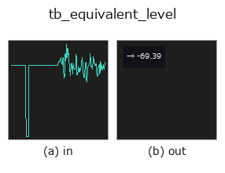

typed op• 데이터 종류: signal → feature
• 호출: fullseye.apply(img, "tb_equivalent_level", a=0.5, b=0.5)(2-D 는 이미지 1 장 + 스칼라 노브 2 개 a,b∈[0,1] 모델)

*그림은 128×128 합성 입력에서 실제로 실행한 출력. 왼쪽이 입력, 오른쪽이 출력. 점군은 위에서 본 산점도(밝기 = z), 1-D 열은 꺾은선, 볼륨은 z 방향 최대값 투영, 동영상은 가운데 프레임, 복소 영상은 진폭이며, 그림이 되지 않는 반환값은 값 자체를 표시한다.*
노브 a 를 훑기(0.1 / 0.5 / 0.9, 다른 노브는 기본값):
▸ tb_equivalent_level: knob a sweep (docs site)
*노브 b 는 출력을 바꾸지 않는다(실측: 0.1 / 0.5 / 0.9에서 동일).*
단계(앞에 오는 op → 이 op, 왼쪽에서 오른쪽으로):
▸ tb_equivalent_level: stages (docs site)
기록의 에너지 등가 레벨. `ref` 대비 dB 단위.
> 아래 상세 설명은 원문입니다 —— 요약과 제목은 번역되어 있습니다.
`L_eq = 10 log10(mean(x_w**2) / ref**2) where x_w` is the signal after
the chosen weighting. Returns a plain float.
The reference is yours to supply. The default `ref=1.0` means dB
relative to one unit of the signal's own units; it is not dB SPL, because
this library never sees your calibration. Pass `ref=20e-6` for pascals.
Measured: a 1 kHz sine of amplitude 1.0 at 16 kHz over exactly 1000 periods
gives `L_eq = -3.010300` dB with Z weighting, against the closed form
`10*log10(1/2) = -3.010300` (difference 2.2e-15 dB), and the same value
under A weighting (difference 8.9e-16 dB), because A is 0 dB at 1 kHz.
Doubling the amplitude adds 6.020600 dB. Silence returns -200.0.
Silence returns `floor_db (default -200) rather than -inf; an -inf`
in a list of levels destroys every average taken over it afterwards.
**A weighted level is only as good as the weighting, and the weighting has a
leakage limit this operator inherits in full.** A pure tone that is not a
whole number of periods in the record comes back too loud — measured
+7.7986 dB at 31.5 Hz (a nominal one-third-octave centre) over 0.5 s at
48 kHz, and up to +17.2116 dB at 20.5 Hz — with no exception, no NaN and
no warning. `weighting="Z" is exempt (it does no filtering) and "C"` is
nearly so (+0.0493 dB on the same tone); it is `"A"`, whose curve spans
about 40 dB across the audio band, that is exposed.
`window="hann"` is the opt-in remedy: the record is multiplied by a Hann
window and the mean square divided by the window's own mean square, which
suppresses the leakage almost entirely — the 31.5 Hz error goes from
+7.7986 to +0.0534 dB and the 20.5 Hz error from +17.2116 to
+0.1841 — while costing about 0.15 dB on records that were exact
before. It is not the default, and must not be used when a transient's
level is the point: a window makes the answer depend on *where in the
record the sound happened*. Measured on a 50 ms burst inside a 0.5 s record
(Z weighting, so only the window acts; unwindowed all three are -13.0103 dB
as they must be): at the start -36.0587, at the centre -8.8218, at
the end -36.0587 — a 27 dB spread produced by nothing but position.
Use `"hann"` for a stationary tonal record, which is exactly the case the
leakage ruins, and `"none"` (the default, an honest energy average) for
everything else. The full measurement is in :func:apply_weighting.
Raises `ValueError: everything :func:_as_signal` refuses, an unknown
`weighting or window, ref <= 0` (a decibel needs a positive reference; a zero
reference makes every level `+inf` and a negative one makes the ratio
negative), `rate <= 0`.
Typed bridge of the acoustics op `equivalent_level into the 2-D evolution registry: the same implementation, called under the op(v, a, b) convention. a drives ref (default 1); b` is unused.
• 샘플 데이터 카탈로그(DL URL / 라이선스) —— 2-D 는 skimage.data(BSD/public)+ 합성, 3-D 는 실데이터 소스(Stanford/PDS 등)의 DL URL.
• 연산자의 내력·참고문헌 —— 이 연산자 족의 바탕이 된 연구/기법의 출처.
아래 프로그램은 실제로 실행됨을 확인했습니다(그림과 같은 입력). Studio 도움말에서는 이 블록이 버튼이 되어 즉시 불러와 실행할 수 있습니다.
img_to_signal 0.50 0.50 tb_equivalent_level 0.50 0.50
▸ Load this pipeline · Load & run
아래 예제는 원래의 대장 op equivalent_level를 호출한다. 이 브리지 op는 같은 구현을 fn(v, a, b) 규약에 맞춘 것뿐이므로 동작은 그대로 적용된다(호출 형식만 다름).
• acoustic_condition_monitoring — py -3.11 examples/acoustic_condition_monitoring.py
feature 를 입력으로 받는 것)typed)tb_points_to_voxel · tb_estimate_point_normals · tb_iss_keypoints · tb_angle_3points · tb_project_points · tb_render_point_depth · tb_statistical_outlier_removal · tb_radius_outlier_removal
*Provenance: ops.py — 2D 연산자 레지스트리. 이 op 노트는 tools/opdocs.py md 가 자동 생성합니다(직접 편집하지 마세요).*
© 2026 Kazufumi Furuse — Fullseye operator documentation. Licensed under Apache-2.0.
{kind=link}
{kind=link}